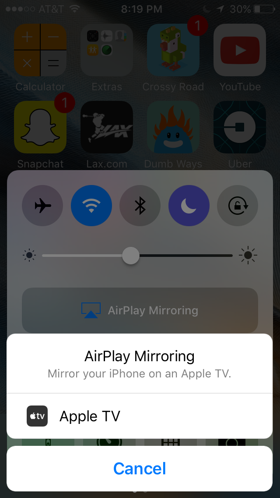
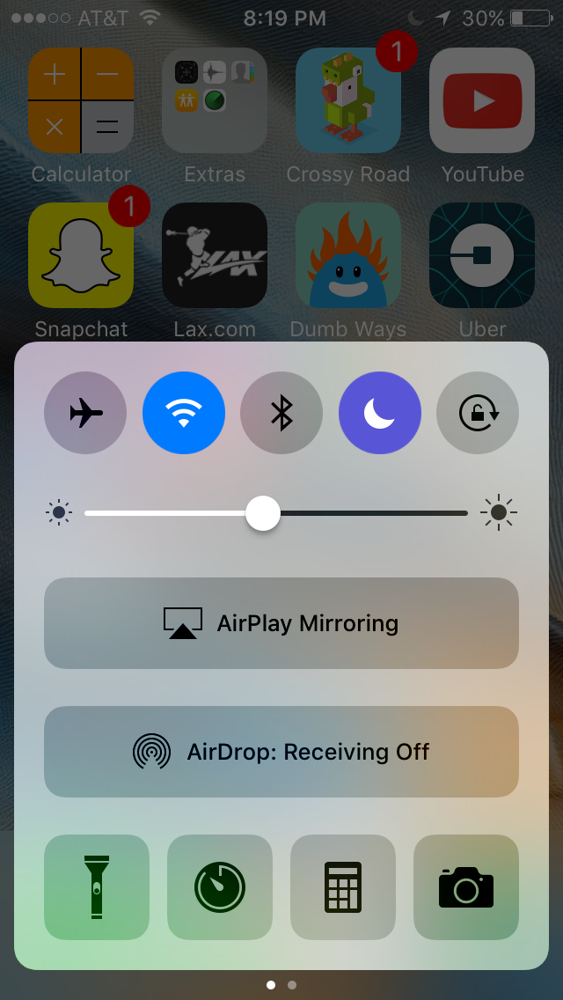

1209 Glen Apple TV
Control Apple TV using the Apple TV remote (n.b., uses infrared and therefore needs line-of-sight access to the Apple TV device, which is immediately to the left of the television):
OR iPhone users can use the Apple TV Remote app (in which case your phone must be connected to the adyn_pep Wi-Fi network)
Screen mirroring
To mirror your iPhone on the TV, connect to the adyn_pep Wi-Fi network and swipe up to expose the AirPlay menu:

Click AirDrop to stop:

contact Nelson:
nelson.sproul@gmail.com
(209)677-7685
contact Deirdre:
dvsproul@gmail.com
(415)370-6422
from the City of Berkeley:
short-term rental guest requirements
Home